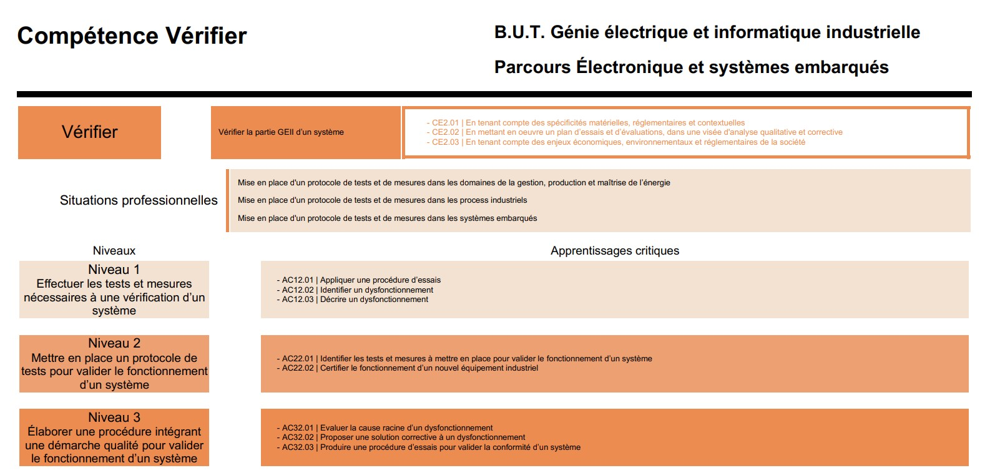
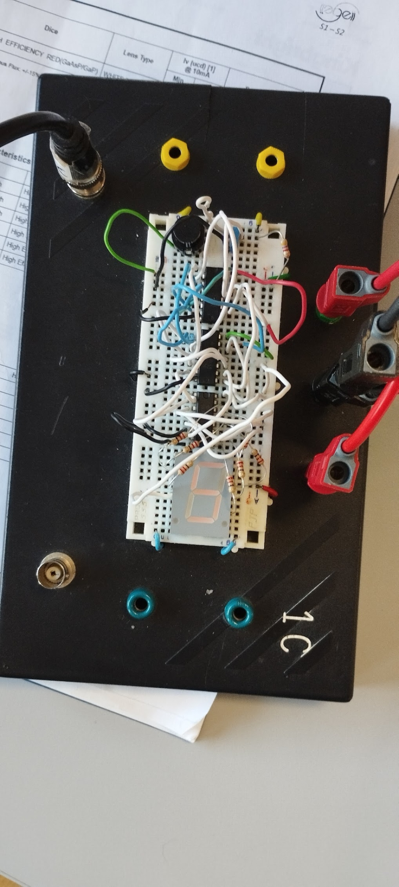
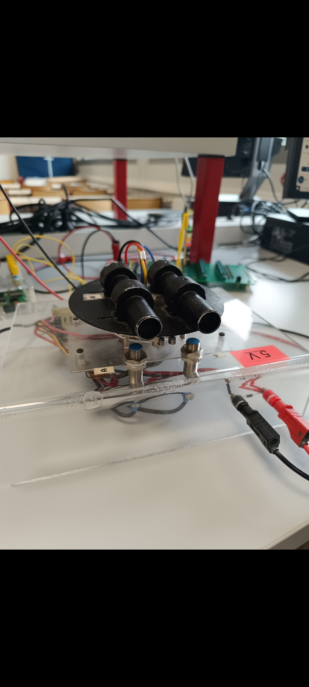

Fiche descriptive
Description à venir.

Projet Dé Electronique

Ce projet s'est déroulé en deux temps. Dans un premier temps, nous avons conçu et réalisé un dé électronique, un circuit intégrant des LEDs et une logique combinatoire pour simuler les faces d'un dé. Dans un second temps, nous avons reçu une carte électronique volontairement défectueuse et devions identifier l'erreur en appliquant un protocole de diagnostic appris en cours : lecture du schéma, mesures à l'oscilloscope et au multimètre, localisation de la panne.
| Apprentissages Critiques |
|---|
| AC12.01 — Appliquer une procédure d'essais |
| AC12.02 — Identifier un dysfonctionnement |
| AC12.03 — Décrire un dysfonctionnement |
Projet tracker

Ce projet consistait à tester un tracker motorisé capable de détecter et suivre automatiquement une cible placée devant lui. Le système oriente en temps réel son axe de rotation pour maintenir la cible dans son champ de vision. Nous avons appliqué une procédure d'essais pour valider le bon fonctionnement du suivi et identifier d'éventuels dysfonctionnements.
| Apprentissages Critiques |
|---|
| AC11.02 — Réaliser un prototype pour des solutions techniques matériel et/ou logiciel |
| AC12.01 — Appliquer une procédure d'essais |